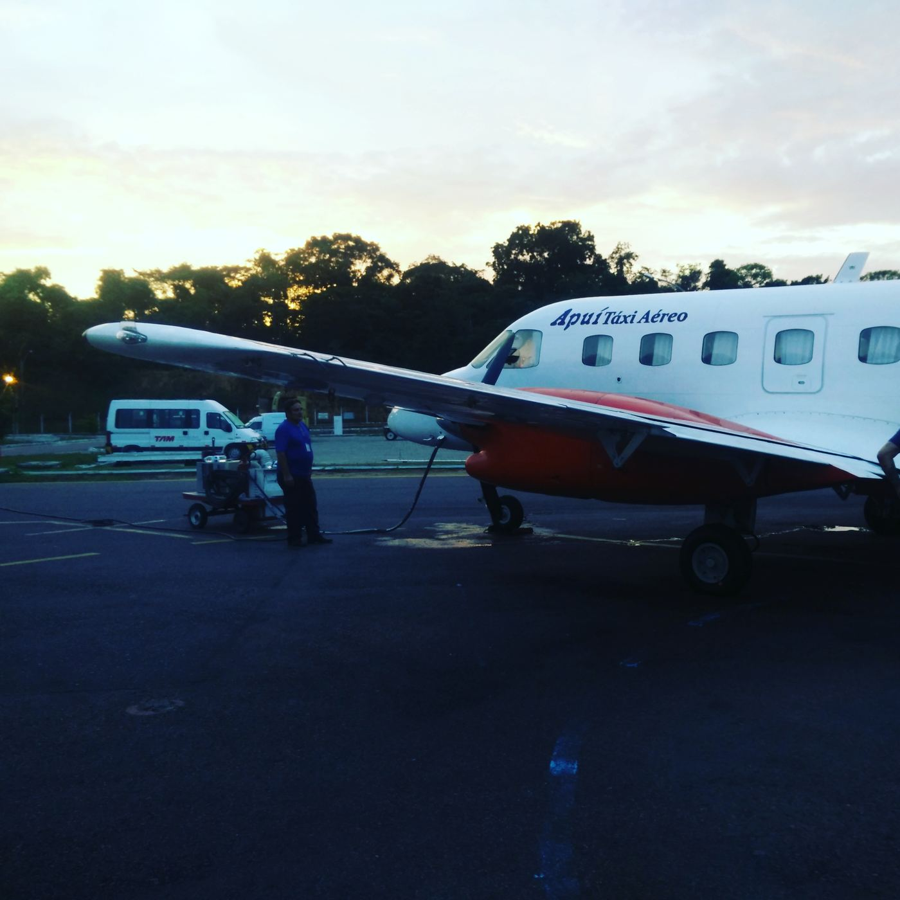
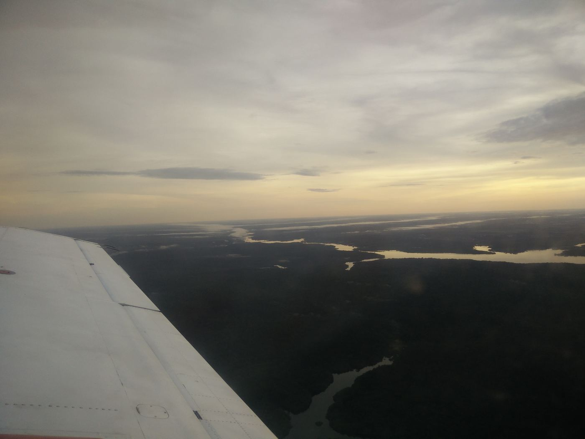

The Rio Madeira Expedition: 23.05.2017, Manicore City
A early start this morning (4a.m.) as our flights leaves by 5:55 (using the Apui air taxi)

I can't stop to be amazed every time I am flying over Amazonia. Rio Negro, Solimões, Madeira are just colossal rivers cutting through the densest green carpet. You can see water until the horizon line and it is an overwhelming feeling.

Miniature lines of houses along the river margins and then scattered all over, and as soon we get more distant from Manaus region they become even more scattered and then… gone. An overwhelming green forest emerges with no apparent anthropic signs. I quickly understand why the Amazon is, still, naively seen as a virgin place where humans were not "suppose" to thrive, and also makes me wonder about the counterfeit paradise definition by Betty Meggers, it is, it really is an overwhelmingly green.
After arriving Manicoré and installing ourselves at Curupira hotel we went to talk with the local gov. institutions in order to request the needed logistical support and, surprisingly, people can be amazingly helpful if they become aware of what you will be doing under their jurisdiction and somehow you make them feel enrolled into the hypothetical world of experimental design and scientific questions. Afer all, having the charismatic André Junqueira doing most of the talking is the task becomes half done as people are easily persuaded by his enthusiasm, knowledge and easy going mood.
Manicoré is a nice city and people seem to be always smiling, leaves the idea that life might be good in the middle of the Amazon. Anyway, we used the afternoon to plan a bit further the logistics and get realistic objectives for the next few days. Therefore we plan to visit some local communities along Manicoré river by tomorrow and leave Capanã Grande for Thursday. I hope to start posting some "green" pictures soon.
Luis